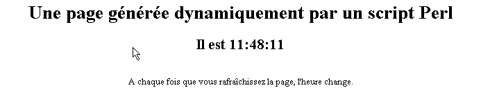
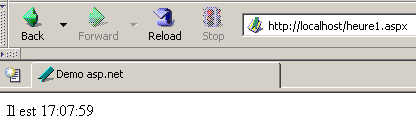
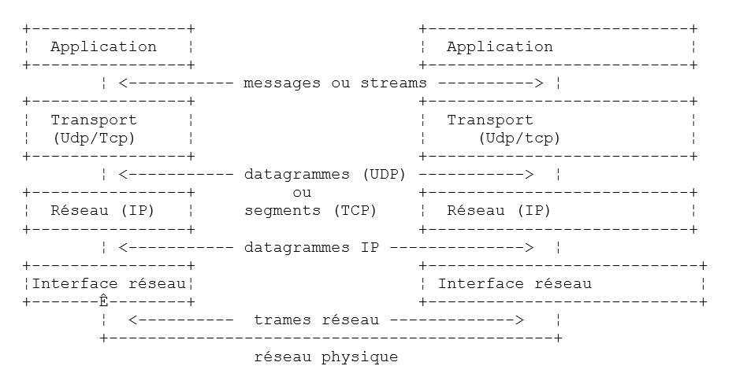
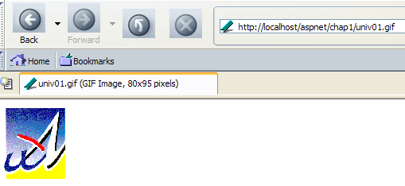
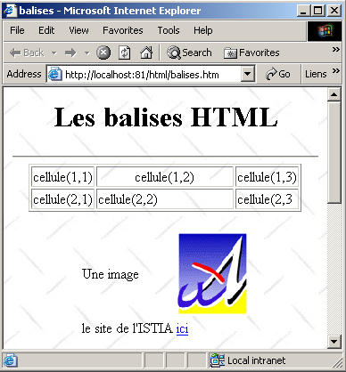
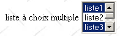

2. The Basics
In this chapter, we present the basics of web programming. Its primary goal is to introduce the key principles of web programming, which are independent of the specific technology used to implement them. It includes numerous examples that you are encouraged to test in order to gradually “absorb” the philosophy of web development. The free tools needed to test them are listed at the end of the document in the appendix titled "Web Tools."
2.1. Components of a Web Application
Server

15Client Machine
Number | Role | Common Examples |
Server OS | Linux, Windows | |
Web Server | Apache (Linux, Windows) IIS (NT), PWS (Win9x), Cassini (Windows + .NET platform) | |
Server-side scripts. They can be executed by server modules or by programs external to the server (CGI). | PERL (Apache, IIS, PWS) VBSCRIPT (IIS, PWS) JAVASCRIPT (IIS, PWS) PHP (Apache, IIS, PWS) JAVA (Apache, IIS, PWS) C#, VB.NET (IIS) | |
Database - This can be on the same machine as the program that uses it or on another machine via the Internet. | Oracle (Linux, Windows) MySQL (Linux, Windows) Postgres (Linux, Windows) Access (Windows) SQL Server (Windows) | |
Client OS | Linux, Windows | |
Web Browser | Netscape, Internet Explorer, Mozilla, Opera | |
Client-side scripts executed within the browser. These scripts have no access to the client computer's disks. | VBScript (IE) JavaScript (IE, Netscape) PerlScript (IE) Java applets |
2.2. The data exchanges in a web application with a form

Client MachineServer
Number | Role |
The browser requests a URL for the first time (http://machine/url). No parameters are passed. | |
The web server sends the web page for that URL. It may be static or dynamically generated by a server-side script (SA) that may have used content from databases (SB, SC). Here, the script will detect that the URL was requested without any parameters and will generate the initial web page. The browser receives the page and displays it (CA). Browser-side scripts (CB) may have modified the initial page sent by the server. Then, through interactions between the user (CD) and the scripts (CB), the web page will be modified. In particular, forms will be filled out. | |
The user submits the form data, which is then sent to the web server. The browser reloads the original URL or a different one, as appropriate, and simultaneously sends the form values to the server. It can use two methods for this: GET and POST. Upon receiving the client’s request, the server executes the script (SA) associated with the requested URL, which will detect the parameters and process them. | |
The server delivers the web page generated by the program (SA, SB, SC). This step is identical to the previous Step 2. Communication now proceeds according to Steps 2 and 3. |
2.3. Notations
In what follows, we will assume that a number of tools have been installed and will adopt the following notations:
notation | meaning |
root of the Apache server directory tree | |
Root directory of web pages served by Apache. Web pages must be located under this root directory. Thus, the URL http://localhost/page1.htm corresponds to the file <apache-DocumentRoot>\page1.htm. | |
Root of the directory tree associated with the cgi-bin alias, where CGI scripts for Apache can be placed. Thus, the URL http://localhost/cgi-bin/test1.pl corresponds to the file <apache-cgi-bin>\test1.pl. | |
The root directory for web pages served by IIS, PWS, or Cassini. Web pages must be located under this root directory. Thus, the URL http://localhost/page1.htm corresponds to the file <IIS-DocumentRoot>\page1.htm. | |
Root of the Perl language directory tree. The perl.exe executable is usually located in <perl>\bin. | |
Root of the PHP directory tree. The executable php.exe is usually located in <php>. | |
Root of the Java directory tree. Java-related executables are located in <java>\bin. | |
Root of the Tomcat server. Examples of servlets can be found in <tomcat>\webapps\examples\servlets and examples of JSP pages in <tomcat>\webapps\examples\jsp |
For each of these tools, refer to the appendix, which provides installation guidance.
2.4. Static Web Pages, Dynamic Web Pages
A static page is represented by an HTML file. A dynamic page, on the other hand, is generated "on the fly" by the web server. In this section, we present various tests using different web servers and programming languages to demonstrate the universality of the web concept. We will use two web servers: Apache and IIS. While IIS is a commercial product, it is available in two more limited but free versions:
- PWS for Win9x machines
- Cassini for Windows 2000 and XP machines
The <IIS-DocumentRoot> folder is usually the folder [drive:\inetpub\wwwroot], where [drive] is the disk (C, D, ...) where IIS was installed. The same applies to PWS. For Cassini, the <IIS-DocumentRoot> folder depends on how the server was launched. The appendix shows that the Cassini server can be launched in a DOS window (or via a shortcut) as follows:
The [WebServer] application, also known as the Cassini web server, accepts three parameters:
- /port: port number of the web service. Can be any number. The default value is 80
- /path: physical path to a folder on the disk
- /vpath: virtual folder associated with the preceding physical folder. Note that the syntax is not /path=path but /vpath:path, contrary to what the help panel above states.
If Cassini is launched as follows:
then the P folder is the root of the Cassini server’s web directory tree. This is therefore the folder designated by <IIS-DocumentRoot>. Thus, in the following example:
the Cassini server will run on port 80, and the root of its <IIS-DocumentRoot> directory is the folder [d:\data\devel\webmatrix]. The web pages to be tested must be located under this root.
Moving forward, each web application will be represented by a single file that can be created using any text editor. No IDE is required.
2.4.1. Static HTML Page (HyperText Markup Language)
Consider the following HTML code:
<html>
<head>
<title>Test 1: A Static Page</title>
</head>
<body>
<center>
A static page...
</body>
</html>
which produces the following web page:
The tests

Test1
- Start the Apache server
- Place the test1.html script in <apache-DocumentRoot>
- View the URL http://localhost/essai1.html in a browser
- Stop the Apache server
Test2
- Start the IIS/PWS/Cassini server
- Place the script test1.html in <IIS-DocumentRoot>
- View the URL http://localhost/essai1.html in a browser
2.4.2. An ASP (Active Server Pages) page
The test2.asp script:
<html>
<head>
<title>Test 1: An ASP page</title>
</head>
<body>
<center>
An ASP page dynamically generated by the PWS server
It is <% =time %>
Every time you refresh the page, the time changes.
</body>
</html>
produces the following web page:

The test
- Start the IIS/PWS server
- Place the essai2.asp script in <IIS-DocumentRoot>
- Request the URL http://localhost/essai2.asp using a browser
2.4.3. A PERL (Practical Extracting and Reporting Language) script
The essai3.pl script:
#!d:\perl\bin\perl.exe
($seconds,$minutes,$hour)=localtime(time);
print <<HTML
Content-type: text/html
<html>
<head>
<title>Test 1: A Perl script</title>
</head>
<body>
<center>
A page dynamically generated by a Perl script
It is $hour:$minutes:$seconds
Every time you refresh the page, the time changes.
</body>
</html>
HTML
;
The first line is the path to the perl.exe executable. You may need to adjust it if necessary. Once executed by a web server, the script produces the following page:

The
- Web server: Apache
- For reference, view the srm.conf or httpd.conf configuration file (depending on your Apache version) in <apache>\confs and look for the line mentioning cgi-bin to determine the <apache-cgi-bin> directory where you should place essai3.pl.
- Place the essai3.pl script in <apache-cgi-bin>
- Request the URL http://localhost/cgi-bin/essai3.pl
Note that it takes longer to load the Perl page than the ASP page. This is because the Perl script is executed by a Perl interpreter that must be loaded before it can run the script. It does not remain in memory permanently.
2.4.4. A PHP script
The essai4.php script
<html>
<head>
<title>Test 4: A PHP Page</title>
</head>
<body>
<center>
A dynamically generated PHP page
<?
$now = time();
echo date("d/m/y, h:i:s", $now);
?>
Every time you refresh the page, the time changes.
</body>
</html>
The previous script generates the following web page:

Tests
Test1
- Check the srm.conf configuration file or Apache's httpd.conf in <Apache>\confs
- For reference, check the PHP configuration lines
- Start the Apache server
- Place essai4.php in <apache-DocumentRoot>
- Request the URL http://localhost/essai4.php
Test2
- Start the IIS/PWS server
- For reference, check the PWS configuration regarding PHP
- Place essai4.php in <IIS-DocumentRoot>\php
- Request the URL http://localhost/essai4.php
2.4.5. A JSP script
The heure.jsp script
<% //Java program displaying the time %>
<%@ page import="java.util.*" %>
<%
// Java code to calculate the time
Calendar calendar = Calendar.getInstance();
int hours = calendar.get(Calendar.HOUR_OF_DAY);
int minutes = calendar.get(Calendar.MINUTE);
int seconds = calendar.get(Calendar.SECOND);
// hours, minutes, and seconds are global variables
// that can be used in the HTML code
%>
<% // HTML code %>
<html>
<head>
<title>JSP page displaying the time</title>
</head>
<body>
<center>
A dynamically generated JSP page
It is <%=hours%>:<%=minutes%>:<%=seconds%>
Every time you reload the page, the time changes
</body>
</html>
Once executed by the web server, this script produces the following page:

The tests
- Place the heure.jsp script in <tomcat>\jakarta-tomcat\webapps\examples\jsp (Tomcat 3.x) or in <tomcat>\webapps\examples\jsp (Tomcat 4.x)
- Start the Tomcat server
- Request the URL http://localhost:8080/examples/jsp/heure.jsp
2.4.6. An ASP.NET page
The heure1.aspx script:
<html>
<head>
<title>ASP.NET Demo</title>
</head>
<body>
It is <% =Date.Now.ToString("hh:mm:ss") %>
</body>
</html>
Once executed by the web server, this script generates the following page:

This test requires a Windows machine on which the .NET platform has been installed (see appendix).
- Place the heure1.aspx script in <IIS-DocumentRoot>
- Start the IIS/CASSINI server
- Request the URL http://localhost/heure1.aspx
2.4.7. Conclusion
The previous examples have shown that:
- an HTML page can be dynamically generated by a program. This is the whole point of web programming.
- the languages and web servers used can vary. Currently, the following major trends are observed:
- the Apache/PHP (Windows, Linux) and IIS/PHP (Windows) combinations
- ASP.NET technology on Windows platforms, which combines the IIS server with a .NET language (C#, VB.NET, etc.)
- Java servlet technology and JSP pages running on various servers (Tomcat, Apache, IIS) and on various platforms (Windows, Linux).
2.5. Browser-side scripts
An HTML page can contain scripts that will be executed by the browser. There are many browser-side scripting languages. Here are a few:
Language | Supported browsers |
VBScript | IE |
JavaScript | IE, Netscape |
PerlScript | IE |
Java | IE, Netscape |
Let's look at a few examples.
2.5.1. A web page with a VBScript script, on the browser side
The vbs1.html page
<html>
<head>
<title>Test: A web page with a VBScript</title>
<script language="vbscript">
function react
alert "You clicked the OK button"
end function
</script>
</head>
<body>
<center>
A Web page with a VB script
Click the button
<input type="button" value="OK" name="cmdOK" onclick="reagir">
</body>
</html>
The HTML page above contains not only HTML code but also a program intended to be executed by the browser that loads this page. The code is as follows:
<script language="vbscript">
function react
alert "You clicked the OK button"
end function
</script>
The <script></script> tags are used to delimit scripts within an HTML page. These scripts can be written in various languages, and the language attribute of the <script> tag specifies the language used. In this case, it is VBScript. We will not go into detail about this language. The script above defines a function called react that displays a message. When is this function called? The following line of HTML code tells us:
The onclick attribute specifies the name of the function to be called when the user clicks the OK button. Once the browser has loaded this page and the user clicks the OK button, the following page will appear:

Tests
Only Internet Explorer is capable of executing VBScript scripts. Netscape requires add-ons to do so. We can perform the following tests:
- Apache server
- vbs1.html script in <apache-DocumentRoot>
-
Request the URL http://localhost/vbs1.html using Internet Explorer
-
IIS/PWS server
- vbs1.html script in <pws-DocumentRoot>
- Request the URL http://localhost/vbs1.html using Internet Explorer
A web page with a JavaScript script, on the browser side
The page: js1.html
<html>
<head>
<title>Test 4: A web page with a JavaScript script</title>
<script language="javascript">
function react(){
alert("You clicked the OK button");
}
</script>
</head>
<body>
<center>
A Web Page with a JavaScript Script
Click the button
<input type="button" value="OK" name="cmdOK" onclick="reagir()">
</body>
</html>
This is identical to the previous page, except that we have replaced VBScript with JavaScript. JavaScript has the advantage of being supported by both Internet Explorer and Netscape. Running this code produces the same results:

The tests
- Apache server
- js1.html script in <apache-DocumentRoot>
-
Request the URL http://localhost/js1.html using Internet Explorer or Netscape
-
IIS/PWS server
- js1.html script in <pws-DocumentRoot>
- Request the URL http://localhost/js1.html using Internet Explorer or Netscape
2.6. Client-server communication
Let’s return to our initial diagram illustrating the components of a web application:

Server Machine
Here, we are focusing on the exchanges between the client machine and the server machine. These occur over a network, and it is worth reviewing the general structure of exchanges between two remote machines.
2.6.1. The OSI Model
The open network model known as the OSI (Open Systems Interconnection Reference Model), defined by the ISO (International Organization for Standardization), describes an ideal network in which communication between machines can be represented by a seven-layer model:

Each layer receives services from the layer below it and provides its own services to the layer above it. Suppose two applications located on different machines A and B want to communicate: they do so at the Application layer. They do not need to know all the details of how the network operates: each application passes the information it wishes to transmit to the layer below it: the Presentation layer. The application therefore only needs to know the rules for interfacing with the Presentation layer. Once the information is in the Presentation layer, it is passed according to other rules to the Session layer, and so on, until the information reaches the physical medium and is physically transmitted to the destination machine. There, it will undergo the reverse process of what it underwent on the sending machine.
At each layer, the sender process responsible for sending the information sends it to a receiver process on the other machine belonging to the same layer as itself. It does so according to certain rules known as the layer protocol. We therefore have the following final communication diagram:

The roles of the different layers are as follows:
Ensures the transmission of bits over a physical medium. This layer includes data processing terminal equipment (DPTE) such as terminals or computers, as well as data circuit termination equipment (DCTE) such as modulators/demodulators, multiplexers, and concentrators. Key points at this level are: . the choice of information encoding (analog or digital) . the choice of transmission mode (synchronous or asynchronous). | |
Hides the physical characteristics of the Physical Layer. Detects and corrects transmission errors. | |
Manages the path that information sent over the network must follow. This is called routing: determining the route that information must take to reach its destination. | |
Enables communication between two applications, whereas the previous layers only allowed communication between machines. A service provided by this layer can be multiplexing: the transport layer can use a single network connection (from machine to machine) to transmit data belonging to multiple applications. | |
This layer provides services that allow an application to open and maintain a working session on a remote machine. | |
It aims to standardize the representation of data across different machines. Thus, data originating from machine A will be "formatted" by machine A’s Presentation layer according to a standard format before being sent over the network. Upon reaching the Presentation layer of the destination machine B, which will recognize them thanks to their standard format, they will be formatted differently so that the application on machine B can recognize them. | |
At this level, we find applications that are generally close to the user, such as email or file transfer. |
2.6.2. The TCP/IP Model
The OSI model is an ideal model. The TCP/IP protocol suite approximates it as follows:

- the network interface (the computer’s network card) performs the functions of layers 1 and 2 of the OSI model
- the IP (Internet Protocol) layer performs the functions of layer 3 (network)
- the TCP (Transmission Control Protocol) or UDP (User Datagram Protocol) layer performs the functions of Layer 4 (transport). The TCP protocol ensures that the data packets exchanged between machines reach their destination. If they do not, it resends the lost packets. The UDP protocol does not perform this task, so it is up to the application developer to do so. This is why, on the internet—which is not a 100% reliable network—the TCP protocol is the most widely used. This is referred to as a TCP-IP network.
- The Application layer covers the functions of layers 5 through 7 of the OSI model.
Web applications reside in the Application layer and therefore rely on TCP/IP protocols. The Application layers of the client and server machines exchange messages, which are then handed off to layers 1 through 4 of the model to be routed to their destination. To communicate with each other, the Application layers of both machines must "speak" the same language or protocol. The protocol used by web applications is called HTTP (HyperText Transfer Protocol). It is a text-based protocol, meaning that machines exchange lines of text over the network to communicate. These exchanges are standardized, meaning that the client has a set of messages to tell the server exactly what it wants, and the server also has a set of messages to provide the client with its response. This message exchange takes the following form:

Client --> Server
When the client makes a request to the web server, it sends
- text lines in HTTP format to indicate what it wants
- an empty line
- optionally a document
Server --> Client
When the server responds to the client, it sends
- lines of text in HTTP format to indicate what it is sending
- an empty line
- optionally a document
Communications therefore follow the same format in both directions. In both cases, a document may be sent, even though it is rare for a client to send a document to the server. But the HTTP protocol allows for this. This is what enables, for example, subscribers of an ISP to upload various documents to their personal website hosted by that ISP. The documents exchanged can be of any type. Consider a browser requesting a web page containing images:
- the browser connects to the web server and requests the page it wants. The requested resources are uniquely identified by URLs (Uniform Resource Locators). The browser sends only HTTP headers and no document.
- The server responds. It first sends HTTP headers indicating what type of response it is sending. This may be an error if the requested page does not exist. If the page exists, the server will indicate in the HTTP headers of its response that it will send an HTML (HyperText Markup Language) document following them. This document is a sequence of lines of text in HTML format. HTML text contains tags (markers) that provide the browser with instructions on how to display the text.
- The client knows from the server’s HTTP headers that it will receive an HTML document. It will parse this document and may notice that it contains image references. These images are not included in the HTML document. It therefore makes a new request to the same web server to request the first image it needs. This request is identical to the one made in step 1, except that the requested resource is different. The server will process this request by sending the requested image to the client. This time, in its response, the HTTP headers will specify that the document sent is an image and not an HTML document.
- The client retrieves the sent image. Steps 3 and 4 will be repeated until the client (usually a browser) has all the documents needed to display the entire page.
2.6.3. The HTTP Protocol
Let’s explore the HTTP protocol through examples. What do a browser and a web server exchange?
2.6.3.1. The Response from an HTTP Server
Here, we’ll explore how a web server responds to requests from its clients. The Web service or HTTP service is a TCP/IP service that typically operates on port 80. It could operate on a different port. In that case, the client browser would need to specify that port in the URL it requests. A URL generally follows this format:
where
protocol | http for the web service. A browser can also act as a client for FTP, news, Telnet, and other services. |
machine | name of the machine hosting the web service |
port | Web service port. If it is 80, the port number can be omitted. This is the most common case |
path | path to the requested resource |
info | additional information provided to the server to specify the client's request |
What does a browser do when a user requests a URL to be loaded?
- It establishes a TCP/IP connection with the machine and port specified in the machine[:port] portion of the URL. Establishing a TCP/IP connection means creating a "channel" of communication between two machines. Once this channel is established, all information exchanged between the two machines will pass through it. The creation of this TCP-IP pipe does not yet involve the Web’s HTTP protocol.
- Once the TCP-IP connection is established, the client sends its request to the web server by sending lines of text (commands) in HTTP format. It sends the path/info portion of the URL to the server
- The server will respond in the same way and through the same connection
- One of the two parties will decide to close the connection. This depends on the HTTP protocol used. With HTTP 1.0, the server closes the connection after each of its responses. This forces a client that needs to make multiple requests to retrieve the various documents comprising a web page to open a new connection for each request, which incurs a cost. With the HTTP/1.1 protocol, the client can tell the server to keep the connection open until it tells the server to close it. It can therefore retrieve all the documents for a web page using a single connection and close the connection itself once the last document has been obtained. The server will detect this closure and close the connection as well.
To examine the exchanges between a client and a web server, we will use a tool called curl. Curl is a DOS application that allows you to act as a client for Internet services supporting various protocols (HTTP, FTP, TELNET, GOPHER, etc.). Curl is available at the URL http://curl.haxx.se/. Here, we will preferably download the Windows version win32-nossl, as the win32-ssl version requires additional DLLs not included in the curl package. This package contains a set of files that simply need to be extracted into a folder we will henceforth call <curl>. This folder contains an executable file named [curl.exe]. This will be our client for querying web servers. Open a Command Prompt window and navigate to the <curl> folder:
dos>dir curl.exe
03/22/2004 1:29 PM 299,008 curl.exe
E:\curl2>curl
curl: try 'curl --help' for more information
dos>curl --help | more
Usage: curl [options...] <url>
Options: (H) means HTTP/HTTPS only, (F) means FTP only
-a/--append Append to target file when uploading (F)
-A/--user-agent <string> User-Agent to send to server (H)
--anyauth Tell curl to choose an authentication method (H)
-b/--cookie <name=string/file> Cookie string or file to read cookies from (H)
--basic Enable HTTP Basic Authentication (H)
-B/--use-ascii Use ASCII/text transfer
-c/--cookie-jar <file> Write cookies to this file after the operation (H)
....
Let’s use this application to query a web server and examine the exchanges between the client and the server. We will be in the following situation:

The web server can be any server. Here, we aim to discover the exchanges that will occur between the curl web client and the web server. Previously, we created the following static HTML page:
<html>
<head>
<title>Test 1: A Static Page</title>
</head>
<body>
<center>
A static page...
</body>
</html>
which we view in a browser:

We can see that the requested URL is: http://localhost/aspnet/chap1/statique1.html. The web server is therefore localhost (=local machine) on port 80. If we view the HTML source of this web page (View/Source), we see the HTML text that was originally created:

Now let’s use our CURL client to request the same URL:
dos>curl http://localhost/aspnet/chap1/statique1.html
<html>
<head>
<title>Test 1: A Static Page</title>
</head>
<body>
<center>
A static page...
</body>
</html>
We can see that the web server sent it a set of text lines representing the HTML code for the requested page. We mentioned earlier that a web server’s response takes the form:

However, here we did not see the HTTP headers. This is because [curl] does not display them by default. The --include option allows you to display them:
E:\curl2>curl --include http://localhost/aspnet/chap1/statique1.html
HTTP/1.1 200 OK
Server: Microsoft ASP.NET Web Matrix Server/0.6.0.0
Date: Mon, 22 Mar 2004 16:51:00 GMT
X-AspNet-Version: 1.1.4322
Cache-Control: public
ETag: "1C4102CEE8C6400:1C4102CFBBE2250"
Content-Type: text/html
Content-Length: 161
Connection: Close
<html>
<head>
<title>Test 1: A Static Page</title>
</head>
<body>
<center>
A static page...
</body>
</html>
The server did indeed send a series of HTTP headers followed by a blank line:
HTTP/1.1 200 OK
Server: Microsoft ASP.NET Web Matrix Server/0.6.0.0
Date: Mon, 22 Mar 2004 16:51:00 GMT
X-AspNet-Version: 1.1.4322
Cache-Control: public
ETag: "1C4102CEE8C6400:1C4102CFBBE2250"
Content-Type: text/html
Content-Length: 161
Connection: Close
the server says
| |
the server identifies itself. Here it is a Cassini server | |
the date/time of the response | |
header specific to the Cassini server | |
provides the client with information on whether the response sent to it can be cached. The [public] attribute tells the client that it can cache the page. A [no-cache] attribute would have told the client not to cache the page. | |
... | |
The server indicates that it will send text in HTML format. | |
The number of bytes in the document that will be sent after the HTTP headers. This number is actually the size in bytes of the file essai1.html: | |
the server indicates that it will close the connection once the document is sent |
The client receives these HTTP headers and now knows it will receive 161 bytes representing an HTML document. The server sends these 161 bytes immediately after the blank line that signaled the end of the HTTP headers:
<html>
<head>
<title>Test 1: A Static Page</title>
</head>
<body>
<center>
A static page...
</body>
</html>
Here we see the HTML file as it was originally constructed. If our client were a browser, after receiving these lines of text, it would interpret them to display the following page to the user:
Let’s use our [curl] client again to request the same resource, but this time asking only for the response headers:
dos>curl --head http://localhost/aspnet/chap1/statique1.html
HTTP/1.1 200 OK
Server: Microsoft ASP.NET Web Matrix Server/0.6.0.0
Date: Tue, 23 Mar 2004 07:11:54 GMT
Cache-Control: public
ETag: "1C410A504D60680:1C410A58621AD3E"
Content-Type: text/html
Content-Length: 161
Connection: Close
We get the same result as before without the HTML document. Now let’s request an image using both a browser and the generic TCP client. First, using a browser:

The file univ01.gif is 4052 bytes:
Now let’s use the [curl] client:
dos>curl --head http://localhost/aspnet/chap1/univ01.gif
HTTP/1.1 200 OK
Server: Microsoft ASP.NET Web Matrix Server/0.6.0.0
Date: Tue, 23 Mar 2004 07:18:44 GMT
Cache-Control: public
ETag: "1C410A6795D7500:1C410A6868B1476"
Content-Type: image/gif
Content-Length: 4052
Connection: Close
Note the following points in the request-response cycle above:
| |
| |
|
2.6.3.2. An HTTP client’s request
Now, let’s ask ourselves the following question: if we want to write a program that “talks” to a web server, what commands must it send to the web server to obtain a given resource? In the previous examples, we saw what the client received but not what the client sent. We’ll use curl’s [--verbose] option to also see what the client sends to the server. Let’s start by requesting the static page:
dos>curl --verbose http://localhost/aspnet/chap1/statique1.html
* About to connect() to localhost:80
* Connected to localhost (127.0.0.1) port 80
> GET /aspnet/chap1/static1.html HTTP/1.1
User-Agent: curl/7.10.8 (win32) libcurl/7.10.8 OpenSSL/0.9.7a zlib/1.1.4
Host: localhost
Pragma: no-cache
Accept: image/gif, image/x-xbitmap, image/jpeg, image/pjpeg, */*
< HTTP/1.1 200 OK
< Server: Microsoft ASP.NET Web Matrix Server/0.6.0.0
< Date: Tue, 23 Mar 2004 07:37:06 GMT
< Cache-Control: public
< ETag: "1C410A504D60680:1C410A58621AD3E"
< Content-Type: text/html
< Content-Length: 161
< Connection: Close
<html>
<head>
<title>Test 1: A Static Page</title>
</head>
<body>
<center>
A static page...
</body>
</html>
* Closing connection #0
First, the [curl] client establishes a TCP/IP connection to port 80 on the localhost machine (=127.0.0.1)
Once the connection is established, it sends its HTTP request. This is a sequence of text lines ending with a blank line:
GET /aspnet/chap1/statique1.html HTTP/1.1
User-Agent: curl/7.10.8 (win32) libcurl/7.10.8 OpenSSL/0.9.7a zlib/1.1.4
Host: localhost
Pragma: no-cache
Accept: image/gif, image/x-xbitmap, image/jpeg, image/pjpeg, */*
A web client's HTTP request has two functions:
- to specify the desired resource. This is the role of the first line, GET
- to provide information about the client making the request so that the server can potentially tailor its response to this specific type of client.
The meaning of the lines sent above by the client [curl] is as follows:
to request a given resource using a specific version of the HTTP protocol. The server sends a response in HTTP format followed by a blank line followed by the requested resource | |
to indicate who the client is | |
to specify (HTTP 1.1 protocol) the machine and port of the queried web server | |
here to specify that the client does not support caching. | |
MIME types specifying the file types the client can handle |
Let's try the operation again with the --head option of [curl]:
dos>curl --verbose --head --output response.txt http://localhost/aspnet/chap1/statique1.html
* About to connect() to localhost:80
* Connected to localhost (127.0.0.1) port 80
> HEAD /aspnet/chap1/statique1.html HTTP/1.1
User-Agent: curl/7.10.8 (win32) libcurl/7.10.8 OpenSSL/0.9.7a zlib/1.1.4
Host: localhost
Pragma: no-cache
Accept: image/gif, image/x-xbitmap, image/jpeg, image/pjpeg, */*
< HTTP/1.1 200 OK
< Server: Microsoft ASP.NET Web Matrix Server/0.6.0.0
< Date: Tue, 23 Mar 2004 07:54:22 GMT
< Cache-Control: public
< ETag: "1C410A504D60680:1C410A58621AD3E"
< Content-Type: text/html
< Content-Length: 161
< Connection: Close
We will focus only on the HTTP headers sent by the client:
HEAD /aspnet/chap1/static1.html HTTP/1.1
User-Agent: curl/7.10.8 (win32) libcurl/7.10.8 OpenSSL/0.9.7a zlib/1.1.4
Host: localhost
Pragma: no-cache
Accept: image/gif, image/x-xbitmap, image/jpeg, image/pjpeg, */*
Only the command requesting the resource has changed. Instead of a GET command, we now have a HEAD command. This command requests that the server’s response be limited to HTTP headers and that it not send the requested resource. The screenshot above does not display the received HTTP headers. These were saved to a file using the [--output response.txt] option of the [curl] command:
dos>more reponse.txt
HTTP/1.1 200 OK
Server: Microsoft ASP.NET Web Matrix Server/0.6.0.0
Date: Tue, 23 Mar 2004 07:54:22 GMT
Cache-Control: public
ETag: "1C410A504D60680:1C410A58621AD3E"
Content-Type: text/html
Content-Length: 161
Connection: Close
2.6.4. Conclusion
We have examined the structure of a web client’s request and the web server’s response to it using a few examples. The communication takes place via the HTTP protocol, a set of text-based commands exchanged between the two parties. The client’s request and the server’s response share the following structure:

In the case of a client request (often called a query), the [Document] section is usually absent. However, it is possible for a client to send a document to the server. It does so using a command called PUT. The two common commands for requesting a resource are GET and POST. The latter will be discussed a bit later. The HEAD command is used to request only the HTTP headers. The GET and POST commands are the most commonly used by browser-based web clients.
In response to a client’s request, the server sends a response with the same structure. The requested resource is transmitted in the [Document] section unless the client’s command was HEAD, in which case only the HTTP headers are sent.
2.7. HTML
A web browser can display various documents, the most common being the HTML (HyperText Markup Language) document. This is formatted text using tags of the form <tag>text</tag>. Thus, the text <B>important</B> will display the text "important" in bold. There are standalone tags such as the tag, which displays a horizontal line. We will not review all the tags that can be found in HTML text. There are many WYSIWYG software programs that allow you to build a web page without writing a single line of HTML code. These tools automatically generate the HTML code for a layout created using the mouse and predefined controls. You can thus insert (using the mouse) a table into the page and then view the HTML code generated by the software to discover the tags to use for defining a table on a web page. It’s as simple as that. Furthermore, knowledge of HTML is essential since dynamic web applications must generate the HTML code themselves to send to web clients. This code is generated programmatically, and you must, of course, know what to generate so that the client receives the web page they want.
In short, you don’t need to know the entire HTML language to get started with web programming. However, this knowledge is necessary and can be acquired by using WYSIWYG web page builders such as Word, FrontPage, DreamWeaver, and dozens of others. Another way to discover the intricacies of HTML is to browse the web and view the source code of pages that feature interesting elements you haven’t encountered before.
2.7.1. An example
Consider the following example, created with FrontPage Express, a free tool included with Internet Explorer. The code generated by FrontPage has been simplified here. This example features some elements commonly found in a web document, such as:
- a table
- an image
- a link

An HTML document generally has the following form:
The entire document is enclosed within the <html>...</html> tags. It consists of two parts:
- <head>...</head>: This is the non-displayable part of the document. It provides information to the browser that will display the document. It often contains the <title>...</title> tag, which sets the text that will appear in the browser's title bar. It may also contain other tags, including those defining the document's keywords, which are then used by search engines. This section may also contain scripts, usually written in JavaScript or VBScript, which will be executed by the browser.
- <body attributes>...</body>: This is the section that will be displayed by the browser. The HTML tags contained in this section tell the browser the "desired" visual layout for the document. Each browser interprets these tags in its own way. As a result, two browsers may display the same web document differently. This is generally one of the challenges faced by web designers.
The HTML code for our example document is as follows:
<html>
<head>
<title>tags</title>
</head>
<body background="/images/standard.jpg">
<center>
HTML Tags
<hr/>
</center>
<table border="1">
cell(1,1)
<td valign="middle" align="center" width="150">cell(1,2)
cell(1,3)
cell(2,1)
cell(2,2)
cell(2,3)
<table border="0">
An image
<img border="0" src="/images/univ01.gif" width="80" height="95">
the ISTIA website
<a href="http://istia.univ-angers.fr">here
</body>
</html>
Only the points of interest to us have been highlighted in the code:
HTML | HTML tags and examples |
<title>tags</title> The text will appear in the browser's title bar when the document is displayed | |
<horizontal> : displays a horizontal line | |
<table attributes>....</table> : to define the table <tr attributes>... : to define a row <td attributes>... : to define a cell examples: <table border="1">... : the border attribute defines the thickness of the table border <td valign="middle" align="center" width="150">cell(1,2) : defines a cell whose content will be cell(1,2). This content will be centered vertically (valign="middle") and horizontally (align="center"). The cell will have a width of 150 pixels (width="150") | |
<img border="0" src="/images/univ01.gif" width="80" height="95"> : defines an image with no border (border="0"), 95 pixels high (height="95"), 80 pixels wide (width="80"), and whose source file is /images/univ01.gif on the web server (src="/images/univ01.gif"). This link is located on a web document accessed via the URL http://localhost:81/html/balises.htm. Therefore, the browser will request the URL http://localhost:81/images/univ01.gif to retrieve the image referenced here. | |
<a href="http://istia.univ-angers.fr">here: causes the text "here" to serve as a link to the URL http://istia.univ-angers.fr. | |
<body background="/images/standard.jpg">: indicates that the image to be used as the page background is located at the URL /images/standard.jpg on the web server. In the context of our example, the browser will request the URL http://localhost:81/images/standard.jpg to retrieve this background image. |
We can see in this simple example that to build the entire document, the browser must make three requests to the server:
- http://localhost:81/html/balises.htm to retrieve the document’s HTML source
- http://localhost:81/images/univ01.gif to retrieve the image univ01.gif
- http://localhost:81/images/standard.jpg to retrieve the background image standard.jpg
The following example shows a web form also created with FrontPage.

The HTML code generated by FrontPage and slightly cleaned up is as follows:
<html>
<head>
<title>tags</title>
<script language="JavaScript">
function clear(){
alert("You clicked the Clear button");
}//clear
</script>
</head>
<body background="/images/standard.jpg">
<form method="POST" >
<table border="0">
Are you married?
<input type="radio" value="Yes" name="R1">Yes
<input type="radio" name="R1" value="no" checked>No
Checkboxes
<input type="checkbox" name="C1" value="one">1
<input type="checkbox" name="C2" value="two" checked>2
<input type="checkbox" name="C3" value="three">3
Input field
<input type="text" name="txtSaisie" size="20" value="a few words">
Password
<input type="password" name="txtMdp" size="20" value="aPassword">
Input field
<textarea rows="2" name="areaSaisie" cols="20">
line1
line2
line3
</textarea>
combo
<select size="1" name="cmbValues">
<option>choice1</option>
<option selected>option2</option>
<option>option3</option>
</select>
single-select list
<select size="3" name="lst1">
<option selected>list1</option>
<option>list2</option>
<option>list3</option>
<option>list4</option>
<option>list5</option>
</select>
multiple-choice list
<select size="3" name="lst2" multiple>
<option>list1</option>
<option>list2</option>
<option selected>list3</option>
<option>list4</option>
<option>list5</option>
</select>
button
<input type="button" value="Clear" name="cmdClear" onclick="clear()">
Submit
<input type="submit" value="Send" name="cmdSend">
reset
<input type="reset" value="Reset" name="cmdReset">
<input type="hidden" name="secret" value="aValue">
</form>
</body>
</html>
The visual-to-HTML-tag mapping is as follows:
Visual control | HTML tag |
<form method="POST" > | |
<input type="text" name="txtInput" size="20" value="a few words"> | |
<input type="password" name="txtPassword" size="20" value="aPassword"> | |
<textarea rows="2" name="inputArea" cols="20"> line1 line2 line3 </textarea> | |
<input type="radio" value="Yes" name="R1">Yes <input type="radio" name="R1" value="No" checked>No | |
<input type="checkbox" name="C1" value="one">1 <input type="checkbox" name="C2" value="two" checked>2 <input type="checkbox" name="C3" value="three">3 | |
<select size="1" name="cmbValues"> <option>choice1</option> <option selected>option2</option> <option>option3</option> </select> | |
<select size="3" name="lst1"> <option selected>list1</option> <option>list2</option> <option>list3</option> <option>list4</option> <option>list5</option> </select> | |
<select size="3" name="lst2" multiple> <option>list1</option> <option>list2</option> <option selected>list3</option> <option>list4</option> <option>list5</option> </select> | |
<input type="submit" value="Submit" name="cmdSubmit"> | |
<input type="reset" value="Reset" name="cmdReset"> | |
<input type="button" value="Clear" name="cmdClear" onclick="clear()"> |
Let's review these different controls.
2.7.1.1. The form
<form method="POST" > |
<form name="..." method="..." action="...">...</form> | |
name="exampleform": form name method="..." : method used by the browser to send the values collected in the form to the web server action="..." : URL to which the values collected in the form will be sent. A web form is enclosed within the <form>...</form> tags. The form can have a name (name="xx"). This applies to all controls found within a form. This name is useful if the web document contains scripts that need to reference form elements. The purpose of a form is to collect information entered by the user via the keyboard or mouse and send it to a web server URL. Which one? The one referenced in the action="URL" attribute. If this attribute is missing, the information will be sent to the URL of the document in which the form is located. This would be the case in the example above. Up until now, we have always viewed the web client as “requesting” information from a web server, never “providing” information to it. How does a web client provide information (the data contained in the form) to a web server? We will return to this in detail a little later. It can use two different methods called POST and GET. The method="method" attribute of the <form> tag, where method is set to GET or POST, tells the browser which method to use to send the information collected in the form to the URL specified by the action="URL" attribute. When the method attribute is not specified, the GET method is used by default. |
2.7.1.2. Input field

<input type="text" name="txtInput" size="20" value="some words"> <input type="password" name="txtMdp" size="20" value="aPassword"> |
<input type="..." name="..." size=".." value=".."> The input tag exists for various controls. It is the type attribute that distinguishes these different controls from one another. | |
type="text": specifies that this is a text input field type="password": the characters in the input field are replaced by asterisks (*). This is the only difference from a normal input field. This type of control is suitable for entering passwords. size="20": number of characters visible in the field—does not prevent the entry of more characters name="txtInput": name of the control value="some words": text that will be displayed in the input field. |
2.7.1.3. Multi-line input field

<textarea rows="2" name="areaSaisie" cols="20"> line1 line2 line3 </textarea> |
<textarea ...>text</textarea> displays a multi-line text input field with initial text inside | |
rows="2": number of rows cols="'20": number of columns name="areaSaisie": control name |
2.7.1.4. Radio buttons

<input type="radio" value="Yes" name="R1">Yes <input type="radio" name="R1" value="no" checked>No |
<input type="radio" attribute2="value2" ....>text Displays a radio button with text next to it. | |
name="radio": name of the control. Radio buttons with the same name form a group of mutually exclusive buttons: only one of them can be selected. value="value": value assigned to the radio button. Do not confuse this value with the text displayed next to the radio button. The text is for display purposes only. checked: if this keyword is present, the radio button is checked; otherwise, it is not. |
2.7.1.5. Checkboxes
<input type="checkbox" name="C1" value="one">1 <input type="checkbox" name="C2" value="two" checked>2 <input type="checkbox" name="C3" value="three">3 |

<input type="checkbox" attribute2="value2" ....>text displays a checkbox with text next to it. | |
name="C1": name of the control. Checkboxes may or may not have the same name. Checkboxes with the same name form a group of associated checkboxes. value="value": value assigned to the checkbox. Do not confuse this value with the text displayed next to the radio button. The text is for display purposes only. checked: if this keyword is present, the radio button is checked; otherwise, it is not. |
2.7.1.6. Drop-down list (combo)
<select size="1" name="cmbValues"> <option>choice1</option> <option selected>option2</option> <option>option3</option> </select> |

<select size=".." name=".."> <option [selected]>...</option> ... </select> displays the text between the <option>...</option> tags in a list | |
name="cmbValues": name of the control. size="1": number of visible list items. size="1" makes the list equivalent to a combo box. selected: if this attribute is present for a list item, that item appears selected in the list. In our example above, the list item "choice2" appears as the selected item in the combo box when it is first displayed. |
2.7.1.7. Single-selection list
<select size="3" name="lst1"> <option selected>list1</option> <option>list2</option> <option>list3</option> <option>list4</option> <option>list5</option> </select> |

<select size=".." name=".."> <option [selected]>...</option> ... </select> displays the text between the <option>...</option> tags in a list | |
the same as for the drop-down list displaying only one item. This control differs from the previous drop-down list only in its size>1 attribute. |
2.7.1.8. Multi-select list
<select size="3" name="lst2" multiple> <option selected>list1</option> <option>list2</option> <option selected>list3</option> <option>list4</option> <option>list5</option> </select> |

<select size=".." name=".." multiple> <option [selected]>...</option> ... </select> displays the text between the <option>...</option> tags in a list | |
multiple: allows multiple items to be selected from the list. In the example above, items list1 and list3 are both selected. |
2.7.1.9. Button
<input type="button" value="Clear" name="cmdClear" onclick="clear()"> |

<input type="button" value="..." name="..." onclick="clear()" ....> | |
type="button": defines a button control. There are two other types of buttons: submit and reset. value="Clear": the text displayed on the button onclick="function()": allows you to define a function to be executed when the user clicks the button. This function is part of the scripts defined in the displayed web document. The syntax above is JavaScript syntax. If the scripts are written in VBScript, you would write onclick="function" without the parentheses. The syntax remains the same if parameters need to be passed to the function: onclick="function(val1, val2,...)" In our example, clicking the Clear button calls the following JavaScript clear function: The clear function displays a message:  |
2.7.1.10. Submit button
<input type="submit" value="Send" name="cmdSend"> |

<input type="submit" value="Send" name="cmdRenvoyer"> | |
type="submit": defines the button as a button for sending form data to the web server. When the user clicks this button, the browser will send the form data to the URL defined in the action attribute of the <form> tag using the method defined by the method attribute of that same tag. value="Submit": the text displayed on the button |
2.7.1.11. Reset button
<input type="reset" value="Reset" name="cmdReset"> |

<input type="reset" value="Reset" name="cmdReset"> | |
type="reset": defines the button as a form reset button. When the user clicks this button, the browser will restore the form to the state in which it was received. value="Reset": the text displayed on the button |
2.7.1.12. Hidden field
<input type="hidden" name="secret" value="aValue"> |
<input type="hidden" name="..." value="..."> | |
type="hidden": specifies that this is a hidden field. A hidden field is part of the form but is not displayed to the user. However, if the user were to view the source code in their browser, they would see the <input type="hidden" value="..."> tag and thus the value of the hidden field. value="aValue": value of the hidden field. What is the purpose of a hidden field? It allows the web server to retain information across a client’s requests. Consider an online shopping application. The customer purchases a first item art1 in quantity q1 on the first page of a catalog and then moves to a new page in the catalog. To remember that the customer purchased q1 items of art1, the server can place these two pieces of information in a hidden field in the web form on the new page. On this new page, the client purchases q2 units of item art2. When the data from this second form is submitted to the server, the server will not only receive the information (q2,art2) but also (q1,art1), which is also part of the form as a hidden field that cannot be modified by the user. The web server will then place the information (q1,art1) and (q2,art2) into a new hidden field and send a new catalog page. And so on. |
2.7.2. Sending form values to a web server by a web client
We mentioned in the previous study that the web client has two methods for sending the values of a form it has displayed to a web server: the GET and POST methods. Let’s look at an example to see the difference between the two methods. The page discussed previously is a static page. To access the HTTP headers sent by the browser requesting this document, we will convert it into a dynamic page for a .NET web server (IIS or Cassini). The focus here is not on .NET technology—which will be covered in the next chapter—but on client-server communication. The code for the ASP.NET page is as follows:
<%@ Page Language="vb" CodeBehind="params.aspx.vb" AutoEventWireup="false" Inherits="ConsoleApplication1.params" %>
<script runat="server">
Private Sub Page_Init(Byval Sender As Object, Byval e As System.EventArgs)
' Save the request
saveRequest
End Sub
Private Sub saveRequest
' Save the current request to request.txt in the page's directory
dim requestFileName as String = Me.MapPath(Me.TemplateSourceDirectory) + "\request.txt"
Me.Request.SaveAs(requestFileName, true)
end sub
</script>
<html>
<head>
<title>tags</title>
<script language="JavaScript">
function clear(){
alert("You clicked the Clear button");
}//clear
</script>
</head>
<body background="/images/standard.jpg">
....
</body>
</html>
To the HTML content of the page under consideration, we add a section of VB.NET code. We will not comment on this code, except to say that each time the document above is called, the web server will save the web client’s request to the [request.txt] file in the folder of the called document.
2.7.2.1. GET Method
Let’s run an initial test, where in the document’s HTML code, the FORM tag is defined as follows:
<form method="get">
The previous document (HTML+VB code) is named [params.aspx]. It is placed in the directory tree of a .NET web server (IIS/Cassini) and accessed via the URL http://localhost/aspnet/chap1/params.aspx:

The browser has just made a request, and we know that it has been saved to the file [request.txt]. Let’s look at its contents:
GET /aspnet/chap1/params.aspx HTTP/1.1
Connection: keep-alive
Keep-Alive: 300
Accept: application/x-shockwave-flash,text/xml,application/xml,application/xhtml+xml,text/html;q=0.9,text/plain;q=0.8,image/png,image/jpeg,image/gif;q=0.2,*/*;q=0.1
Accept-Charset: ISO-8859-1,utf-8;q=0.7,*;q=0.7
Accept-Encoding: gzip,deflate
Accept-Language: en-us,en;q=0.5
Host: localhost
User-Agent: Mozilla/5.0 (Windows; U; Windows NT 5.1; en-US; rv:1.6) Gecko/20040113
We see elements we’ve already encountered with the [curl] client. Others appear for the first time:
the client asks the server not to close the connection after its response. This will allow it to use the same connection for a subsequent request. The connection does not remain open indefinitely. The server will close it after a prolonged period of inactivity. | |
duration in seconds during which the [Keep-Alive] connection will remain open | |
Character set that the client can handle | |
List of languages preferred by the client. |
We fill out the form as follows:

We use the [Submit] button above. Its HTML code is as follows:
When a [Submit] button is clicked, the browser sends the form parameters (the <form> tag) to the URL specified in the [action] attribute of the <form action="URL"> tag, if it exists. If this attribute does not exist, the form parameters are sent to the URL that served the form. This is the case here. The [Submit] button should therefore trigger a request from the browser to the URL [http://localhost/aspnet/chap1/params.aspx] with the form parameters included. Since the [params.aspx] page stores the received request, we should be able to determine how the client submitted these parameters. Let’s try it. We click the [Submit] button. We receive the following response from the browser:

This is the initial page, but you can see that the URL has changed in the browser’s [Address] field. It has become the following:
http://localhost/aspnet/chap1/params.aspx?R1=Oui&C1=un&C2=deux&txtSaisie=programmation+web&txtMdp=thisissecret&areaSaisie=the+basics+of+web%0D%0Aweb+programming&cmbValues=choice3&lst1=list3&lst2=list1&lst2=list3&cmdSubmit=Submit&secret=aValue
We can see that the choices made in the form are reflected in the URL. Let’s look at the contents of the [request.txt] file, which has stored the client’s request:
GET /aspnet/chap1/params.aspx?R1=Yes&C1=one&C2=two&txtInput=web+programming&txtPassword=thisissecret&areaInput=the+basics+of+web%0D%0Aweb+programming&cmbValues=choice3&lst1=list3&lst2=list1&lst2=list3&cmdSubmit=Submit&secret=aValue HTTP/1.1
Connection: keep-alive
Keep-Alive: 300
Accept: application/x-shockwave-flash,text/xml,application/xml,application/xhtml+xml,text/html;q=0.9,text/plain;q=0.8,image/png,image/jpeg,image/gif;q=0.2,*/*;q=0.1
Accept-Charset: ISO-8859-1,utf-8;q=0.7,*;q=0.7
Accept-Encoding: gzip,deflate
Accept-Language: en-us,en;q=0.5
Host: localhost
Referer: http://localhost/aspnet/chap1/params.aspx
User-Agent: Mozilla/5.0 (Windows; U; Windows NT 5.1; en-US; rv:1.6) Gecko/20040113
We see an HTTP request quite similar to the one initially made by the browser when it requested the document without sending any parameters. There are two differences:
The form parameters have been appended to the document URL in the form ?param1=val1¶m2=val2&... | |
The client uses this HTTP header to indicate the URL of the document it was displaying when it made the request |
Let’s take a closer look at how the parameters were passed in the GET URL?param1=value1¶m2=value2&... HTTP/1.1 request, where param1, param2, etc., are the names of the web form controls and value1, value2, etc., are the values associated with them. Below is a three-column table:
- Column 1: shows the definition of an HTML control from the example
- Column 2: shows how this control appears in a browser
- Column 3: shows the value sent to the server by the browser for the control in Column 1, in the form it takes in the GET request from the example
HTML control | Visual | returned value(s) |
<input type="radio" value="Yes" name="R1">Yes <input type="radio" name="R1" value="no" checked>No |  | - the value of the value attribute of the radio button selected by the user. |
<input type="checkbox" name="C1" value="one">1 <input type="checkbox" name="C2" value="two" checked>2 <input type="checkbox" name="C3" value="three">3 |  | C1=one C2=two - values of the "value" attributes of the checkboxes selected by the user |
<input type="text" name="txtInput" size="20" value="a few words"> |  | txtInput=web+programming - text typed by the user in the input field. Spaces have been replaced by the + sign |
<input type="password" name="txtMdp" size="20" value="aPassword"> |  | txtPassword=thisIsSecret - text typed by the user in the input field |
<textarea rows="2" name="inputArea" cols="20"> line1 line2 line3 </textarea> |  | areaSaisie=the+basics+of+web%0D%0A web+programming - text typed by the user in the input field. %OD%OA is the end-of-line marker. Spaces have been replaced by the + sign |
<select size="1" name="cmbValues"> <option>choice1</option> <option selected>choice2</option> <option>choice3</option> </select> |  | cmbValues=option3 - value selected by the user from the single-select list |
<select size="3" name="lst1"> <option selected>list1</option> <option>list2</option> <option>list3</option> <option>list4</option> <option>list5</option> </select> |  | lst1=list3 - value selected by the user from the single-select list |
<select size="3" name="lst2" multiple> <option selected>list1</option> <option>list2</option> <option selected>list3</option> <option>list4</option> <option>list5</option> </select> |  | lst2=list1 lst2=list3 - values selected by the user from the multi-select list |
<input type="submit" value="Submit" name="cmdSubmit"> | cmdSubmit=Submit - name and value attribute of the button used to send the form data to the server | |
<input type="hidden" name="secret" value="aValue"> | secret=aValue - value attribute of the hidden field |
You might wonder what the server did with the parameters passed to it. Actually, nothing. Upon receiving the request
GET /aspnet/chap1/params.aspx?R1=Yes&C1=one&C2=two&txtInput=web+programming&txtPassword=thisissecret&areaInput=the+basics+of+web%0D%0Aweb+programming&cmbValues=choice3&lst1=list3&lst2=list1&lst2=list3&cmdSubmit=Submit&secret=aValue HTTP/1.1
The web server has passed the parameters in the URL to the document http://localhost/aspnet/chap1/params.aspx, i.e., to the document we initially created. We haven’t written any code to retrieve and process the parameters the client sends us. So everything happens as if the client’s request were simply:
This is why, in response to our [Submit] button, we received the same page as the one initially obtained by requesting the URL [http://localhost/aspnet/chap1/params.aspx] without parameters.
2.7.2.2. POST Method
The HTML document is now configured so that the browser uses the POST method to send the form values to the web server:
We request the new document via the URL [http://localhost/aspnet/chap1/params.aspx], fill out the form as we did for the GET method, and submit the parameters to the server using the [Submit] button. We receive the following response page from the server:

We therefore get the same result as with the GET method, i.e., the initial page. Note one difference: in the browser’s [Address] field, the transmitted parameters do not appear. Now, let’s look at the request sent by the client and saved in the [request.txt] file:
POST /aspnet/chap1/params.aspx HTTP/1.1
Connection: keep-alive
Keep-Alive: 300
Content-Length: 210
Content-Type: application/x-www-form-urlencoded
Accept: application/x-shockwave-flash,text/xml,application/xml,application/xhtml+xml,text/html;q=0.9,text/plain;q=0.8,image/png,image/jpeg,image/gif;q=0.2,*/*;q=0.1
Accept-Charset: ISO-8859-1,utf-8;q=0.7,*;q=0.7
Accept-Encoding: gzip,deflate
Accept-Language: en-us,en;q=0.5
Host: localhost
Referer: http://localhost/aspnet/chap1/params.aspx
User-Agent: Mozilla/5.0 (Windows; U; Windows NT 5.1; en-US; rv:1.6) Gecko/20040113
R1=Yes&C1=one&C2=two&txtInput=web+programming&txtPassword=thisissecret&areaInput=the+basics+of+web%0D%0Aweb+programming&cmbValues=choice3&lst1=list3&lst2=list1&lst2=list3&cmdSubmit=Submit&secret=aValue
New elements appear in the client's HTTP request:
The GET request has been replaced by a POST request. The parameters are no longer present in the first line of the request. We can see that they are now placed after the HTTP request following a blank line. Their encoding is identical to that in the GET request. | |
number of characters "posted," i.e., the number of characters the web server must read after receiving the HTTP headers to retrieve the document sent by the client. The document in question here is the list of form values. | |
specifies the type of document the client will send after the HTTP headers. The type [application/x-www-form-urlencoded] indicates that it is a document containing form values. |
There are two methods for transmitting data to a web server: GET and POST. Is one method better than the other? We’ve seen that if a form’s values were sent by the browser using the GET method, the browser would display the requested URL in its Address bar in the form URL?param1=val1¶m2=val2&.... This can be seen as either an advantage or a disadvantage:
- an advantage if you want to allow the user to save this parameterized URL to their bookmarks
- a disadvantage if you do not want the user to have access to certain form information, such as hidden fields
From now on, we will use the POST method almost exclusively in our forms.
2.8. Conclusion
This chapter has introduced various basic concepts of web development:
- the various tools and technologies available (Java, ASP, ASP.NET, PHP, Perl, VBScript, JavaScript)
- client-server communication via the HTTP protocol
- designing a document using HTML
- the design of input forms
We saw an example of how a client could send information to the web server. We did not cover how the server could
- retrieve this information
- process it
- send the client a dynamic response based on the result of the processing
This is the realm of web programming, a topic we will cover in the next chapter with an introduction to ASP.NET technology.